研修シナリオ台本
少年期に大切な
姿勢・休息・動き・視る力
改訂版
スポーツ少年団 指導者向け研修 ｜ 60分（実技・動画を含む）
今回の改訂で直したところ
台本の中で直した箇所には、左側にオレンジの線と「改訂」の印を付けています。スライド（PowerPoint）側で直してほしい箇所は、巻末の「スライド修正リスト」にまとめました。
| 箇所 | 内容 |
|---|
| 団体名・個人名 | 台本とスライド画像から、所属団体名・講師名・ロゴを外しました。名乗る場面（スライド1・48）は黄色の記入欄にしてあるので、当日の状況に合わせて口頭で補ってください。 |
| 時間配分 | スライドごとの目安を足し合わせると約64分半あり、④動き・ストレッチ（2分半超過）と⑥視る力（2分超過）がはみ出していました。④の座学スライド（16〜18、20、25）を短くし、⑤休息を9分から8分に、⑥視る力を10分から11分に組み替えて、ちょうど60分になるようにしました。 |
| 経過時間の表示 | 各スライドに「開始から何分何秒の時点で始めるか」を入れました。手元のタイマーと見比べれば、押しているかどうかがすぐわかります。 |
| 時間配分表 | 元の表は「スライド」の列幅が足りず文字が折り返し、②姿勢のねらいの文が途中で切れていました。列幅を直し、全文を載せています。 |
| スライド9・21（安全面） | 体を動かす前に「痛みがある方は無理をしない」の一言を追加しました。参加者は大人なので、ケガ予防の研修でのケガを防ぐためです。 |
| スライド9（姿勢との結びつき） | 「姿勢」のパートなのに、壁立ちチェックが何を見ているのか説明がありませんでした。「ふだんの立ち姿勢のくせを知るためのチェック」という一文を足しています。 |
| スライド13 | 進行メモの「約3〜4分」と目安の「約4分半」が食い違っていたので、「動画は4分以内、紹介と合わせて4分半」に統一しました。 |
| スライド25 | ④の時間を収めるため、要点を残して短くしました（1分→30秒）。 |
| スライド29 | 「右下の2つ」は指す場所がわかりにくいので、「下の段の右の2つ、スマホと部屋の暗さ」と言葉で言い切る形にしました。 |
| スライド32 | 会場に野球の団がいない場合の短縮版の進行メモを追加しました。 |
| スライド34（つなぎ） | 元は「休みの日のゲームや動画」の話題を出したまま、その後一度も触れずに終わっていました。冒頭スライド2の「ボールが捕れない子」に戻る形に変え、話の最初と最後がつながるようにしました。 |
| スライド36・38 | スライドの文言を直す場合に、読み上げ文も合わせて直すよう準備メモを入れました。 |
| スライド40・42 | 時間が押したときの短縮方法（体験は20秒ずつ、紹介動画は2分以内）を入れました。 |
| スライド14・42の記入欄 | 講師ご本人の言葉が必要な箇所を、黄色の記入欄にして目立たせました。ここは私が代わりに書くべきではないので、空欄のままにしています。 |
| スライド46 | 台本にない質問で答えに自信がないときの受け方を追加しました。 |
時間配分
| 時間 | パート | スライド | このパートのねらい |
|---|
| 0〜5分 | ① 導入 | 1〜4 | この5分で「今日の話は自分の団の子の話だ」と感じてもらえれば成功です。 |
| 5〜15分 | ② 姿勢 | 5〜11 | 「体が硬いのは成長のしるし。だから大人が気づいてあげる」という見方を持ち帰ってもらうパートです。 |
| 15〜21分 | ③ 高校生の声 | 12〜14 | 先輩の本音を聞いて、「今の子には間に合う」と感じてもらうパートです。 |
| 21〜35分 | ④ 動き・ストレッチ | 15〜25 | 「練習前は動的、練習後は静的」を体で覚えて帰ってもらう、いちばん大事なパートです。 |
| 35〜43分 | ⑤ 休息 | 26〜33 | 「休むのはサボりではなく、練習の一部」という考え方を届けるパートです。 |
| 43〜54分 | ⑥ 視る力 | 34〜42 | 今日の研修の山場です。「見る力は育つ。でもその前に、まず見えているかを確かめる」という順番を伝えます。 |
| 54〜60分 | ⑦ まとめ・質疑応答・終わり | 43〜48 | 4つのテーマを一本につなげて、「明日からできること」で締めくくります。 |
台本の見方
ふつうの書体の文章は、そのまま声に出して読める話し言葉です。
進行動き、間の取り方、問いかけなどのメモです。読み上げません。
準備本番前にやっておくことです。
要記入講師ご自身の言葉を書き込む欄です。
改訂今回の改訂で追加・変更したところです。
開始 12:30研修の開始から何分何秒の時点でこのスライドに入るかの目安です。
話すときの心がけ
・数字を出したら、一度ゆっくり繰り返す
・問いかけのあとは3秒ほど待ち、会場の顔を見る
・実技は先にやって見せ、そのあと全員で一緒に動く
・手元のタイマーと各スライドの「開始」時刻を見比べ、遅れていたら次のスライドの説明を短くする
ねらいこの5分で「今日の話は自分の団の子の話だ」と感じてもらえれば成功です。
皆さん、こんにちは。本日はお忙しい中、お集まりいただきありがとうございます。
要記入（所属と名前を名乗る）
今日は「少年期に大切な姿勢・休息・動き・視る力」というテーマで、60分お話しします。途中で実際に体を動かしたり、高校生の動画を見たりする時間もありますので、どうぞ楽な気持ちで参加してください。

02
子どもの「できない」
目安 1分半開始 1:00
まず、ひとつ質問させてください。ボールがなかなか捕れない子。すぐに転んだり、つまずいたりする子。何度教えてもフォームが崩れてしまう子。皆さんの団にも、思い当たる子はいませんか。
進行会場を見回し、3秒ほど待つ。うなずいている方に軽く会釈する
そんなとき、私たちはつい「もっと練習しよう」と言ってしまいがちです。私もそうでした。
でも、もしかすると原因は練習の量ではないかもしれません。体が硬くなっているのかもしれない。疲れがたまっているのかもしれない。そもそも、ボールがしっかり見えていないのかもしれない。目に見えない理由が、実は隠れていることがあるんです。
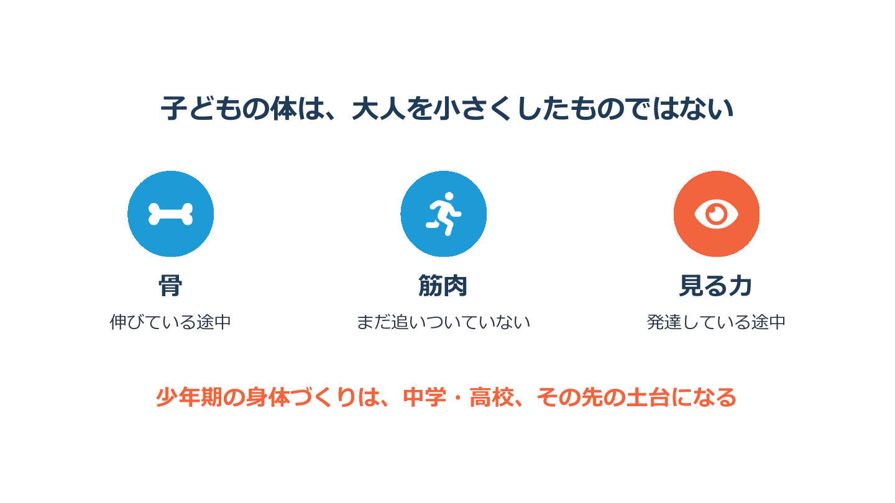
03
子どもの体は、大人を小さくしたものではない
目安 1分開始 2:30
子どもの体は、大人をそのまま小さくしたものではありません。
骨は今まさに伸びている途中です。筋肉は、その骨の伸びにまだ追いついていません。そして「見る力」も、実はまだ育っている途中なんです。
だからこそ、この時期にどんな体づくりをするかが、中学、高校、その先の土台になります。
今日は、4つのテーマでお話しします。
1つ目は姿勢。成長期の体と、体のやわらかさの話です。
2つ目は動き。ストレッチと、練習前の準備の話です。
3つ目は休息。睡眠と休養の話です。
そして4つ目が、視る力。スポーツビジョンと呼ばれるものです。
この4つは、バラバラの話ではありません。最後に一本の線でつながりますので、そこを楽しみに聞いていてください。
ねらい「体が硬いのは成長のしるし。だから大人が気づいてあげる」という見方を持ち帰ってもらうパートです。
では、1つ目のテーマ、姿勢から始めます。キーワードは「成長期の体は、硬くなりやすい」です。
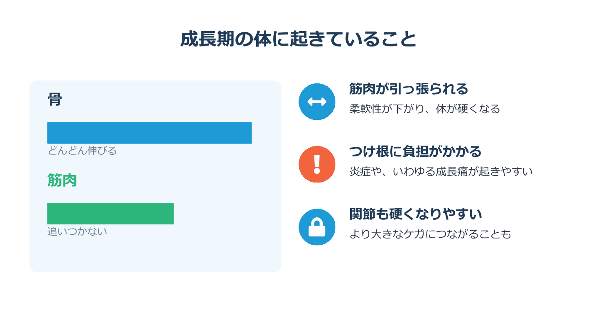
06
成長期の体に起きていること
目安 1分半開始 5:30
成長期の子どもの体の中では、何が起きているのでしょうか。
左の図をご覧ください。骨はどんどん伸びます。ところが筋肉は、そのスピードに追いつけません。
（両手でゴムを引っ張るようなしぐさをしながら）ちょうど、短いゴムを長い棒に張ったような状態です。筋肉がいつも引っ張られているので、体が硬くなります。
そして、筋肉が骨にくっついているつけ根の部分に負担がかかり、炎症や、いわゆる成長痛が起きやすくなります。関節も硬くなりやすく、より大きなケガにつながることもあります。

07
硬さが招く代表的なケガ「オスグッド病」
目安 1分半開始 7:00
硬さが招く代表的なケガが、オスグッド病です。名前を聞いたことがある方も多いと思います。
（自分のひざのお皿のすぐ下を指さしながら）この、ひざのお皿の下が出っ張ってきて、痛みが出ます。
原因は、太ももの前の筋肉です。この筋肉が、すねの骨のつけ根を何度も何度も引っ張ることで起こります。
よく見られるのは10歳から15歳ごろ。骨が急に成長する時期です。ちょうど少年団の高学年から中学生。皆さんが今、目の前で見ている子どもたちの年齢なんです。

08
「成長痛だから、そのうち治る」は要注意
目安 1分開始 8:30
ここで、よくある思い込みをひとつ。「成長痛だから、成長期が終われば自然に治るだろう」。そう思っていないでしょうか。
でも実は、早い段階できちんと診てもらい、治療を受けたかどうかで、その後が大きく変わるケガもあります。
「痛い」と言えること、痛みを我慢させないこと。まずここを大事にしてください。
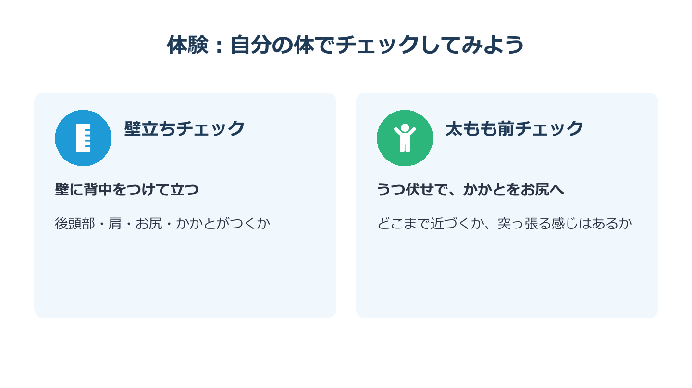
09
体験：自分の体でチェックしてみよう
目安 3分開始 9:30
では、ここで少し体を動かしてみましょう。
ひざや腰に痛みのある方は、無理をせず、見ているだけで大丈夫です。 改訂
進行壁際まで動いてもらう。まず講師が壁に背中をつけて立ち、見本を見せる
壁に背中をつけて、まっすぐ立ってください。後頭部、肩、お尻、かかと。この4か所が、無理なく壁につきますか。
進行20秒ほど待つ
頭がつかない方、肩が浮いてしまう方もいらっしゃると思います。いい悪いではなく、「自分の体はこうなんだ」と知ることが大事です。
壁立ちは、ふだんの立ち姿勢のくせを知るためのチェックです。子どもたちにも、遊び感覚でやらせてみてください。 改訂
次に、床に寝られる方は、うつ伏せになって、片方のかかとをお尻に近づけてみてください。手で足首を持っても構いません。寝られない方は、立ったまま壁に手をついて同じようにやってみてください。
どこまで近づきましたか。太ももの前が突っ張る感じはありますか。
進行30秒ほど待つ
その突っ張りが、先ほどのオスグッド病で話した「太ももの前の筋肉」です。自分の体で感じてみると、背がぐんぐん伸びている子どもたちの体の張りも想像しやすくなると思います。どうぞお席にお戻りください。

10
指導者ができること
目安 1分半開始 12:30
では、指導者として何ができるでしょうか。4つあります。
1つ目は、押して確かめること。ふだんから、ひざの下を手で軽く押して、痛がらないか見てあげてください。
2つ目は、早めに手当てすること。気になるときは練習のあとに冷やして、太ももの前を中心にストレッチをします。
3つ目は、痛いときは休ませること。痛みがあるときは、練習よりも安静を優先します。
4つ目は、医療機関につなぐこと。痛みが続くときは、我々だけで判断せず、専門家に任せましょう。
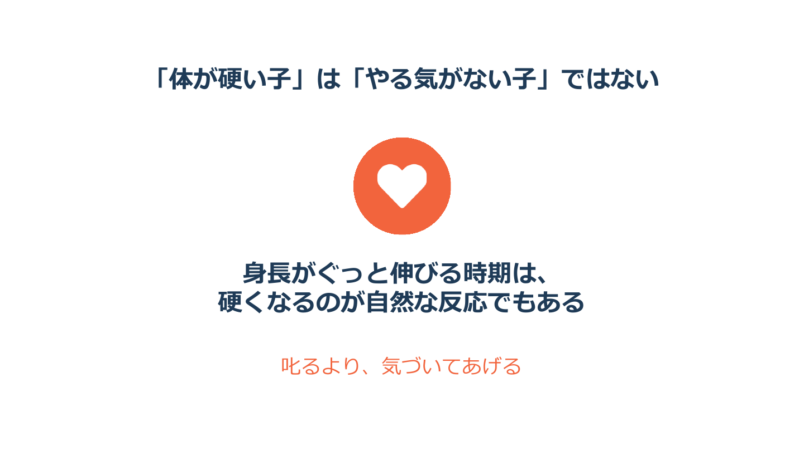
11
「体が硬い子」は「やる気がない子」ではない
目安 1分開始 14:00
姿勢の話の最後に、ひとつだけ心に留めておいてほしいことがあります。
体が硬い子は、やる気がない子ではありません。
身長がぐっと伸びる時期は、硬くなるのが自然な反応でもあります。前屈ができない、動きがぎこちない。そんなときは叱るのではなく、「今、背が伸びているんだな」と気づいてあげてください。それが、私たち大人の役目だと思います。
③ 高校生の声15〜21分
スライド 12 / 48
ねらい先輩の本音を聞いて、「今の子には間に合う」と感じてもらうパートです。動画の中身は実際の声をそのまま生かし、講師が言い換えすぎないようにします。
ここで、少し角度を変えます。
小学生のころの体づくりを、先輩たちは今どう振り返っているのか。実際に高校生に話を聞いてきました。私たち大人の言葉よりも、少し先を歩いている先輩の声のほうが届くことがあります。
③ 高校生の声15〜21分
スライド 13 / 48
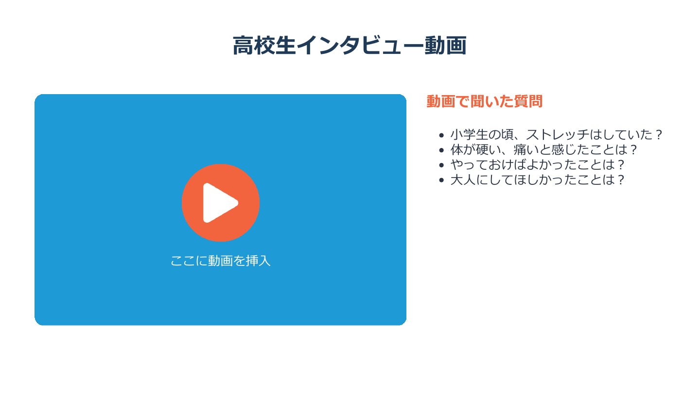
13
高校生インタビュー動画
目安 4分半開始 15:30
動画では、右にある4つの質問をしています。小学生のころ、ストレッチはしていたか。体が硬い、痛いと感じたことはあるか。やっておけばよかったことは何か。大人にしてほしかったことは何か。
ご自分の団の子どもたちの顔を思い浮かべながら、ご覧ください。
進行 改訂動画を再生。動画は4分以内に編集しておく（ここまでの紹介と合わせて4分半）。再生中は講師も画面のほうを向き、話しかけない
準備動画の中で特に印象に残った一言を1つだけメモしておき、次のスライドで引用してください。
③ 高校生の声15〜21分
スライド 14 / 48
いかがでしたか。
要記入動画の中で、「 」という言葉がありました。（メモした一言を引用する）
うちの団の子にも当てはまりそうだなと感じたことはありましたか。
進行会場の1〜2人に短く聞く。答えが出にくいときは、「うなずいている方が多かったですね」と受けて先へ進む
先輩たちの「やっておけばよかった」は、裏を返せば、今の子どもたちにとっての「今ならできる」です。
では、具体的に何ができるのか。次のパートで、実際に体を動かしながら一緒にやってみましょう。
④ 動き・ストレッチ21〜35分
スライド 15 / 48
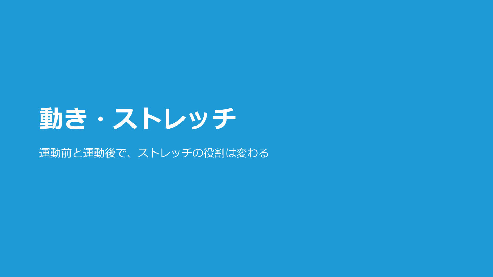
15
動き・ストレッチ（扉）
目安 30秒開始 21:00
ねらい「練習前は動的、練習後は静的」を体で覚えて帰ってもらう、いちばん大事なパートです。座学は短く、実技に時間を使います。このパートは時間が押しやすいので、スライド16〜20は説明を短めに。
2つ目のテーマ、動きです。ここからは体を動かしながら進めますので、上着を脱ぐなど、動きやすい格好でお待ちください。
キーワードは「運動前と運動後で、ストレッチの役割は変わる」です。
④ 動き・ストレッチ21〜35分
スライド 16 / 48
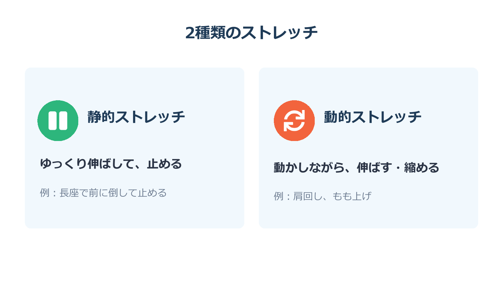
16
2種類のストレッチ
目安 45秒開始 21:30
ストレッチには、大きく分けて2つの種類があります。
ひとつは静的ストレッチ。ゆっくり伸ばして、止めるやり方です。（座ったまま上半身を前に倒して止めて見せる）こういう、私たちが子どものころからよくやってきたものですね。
もうひとつは動的ストレッチ。体を動かしながら、伸ばしたり縮めたりするやり方です。（肩を大きく回して見せる）肩回しやもも上げが、こちらに入ります。
④ 動き・ストレッチ21〜35分
スライド 17 / 48

17
運動前は「動的ストレッチ」が中心
目安 45秒開始 22:15
以前は、練習前に静的ストレッチをじっくりやるのが当たり前でした。
ところが、静的ストレッチを長く行うと、その後のパフォーマンスに悪い影響が出る可能性があることがわかってきました。そこで今は、運動前は動的ストレッチを中心に組み立てることが勧められています。
④ 動き・ストレッチ21〜35分
スライド 18 / 48

18
静的ストレッチは「悪者」ではない
目安 45秒開始 23:00
とはいえ、静的ストレッチが悪者というわけではありません。
運動前に静的ストレッチを入れるなら、1回30秒未満にしてください。そしてそのあとに、必ず動的ストレッチを行います。この順番を守れば、パフォーマンスが下がるのを防げるとされています。
④ 動き・ストレッチ21〜35分
スライド 19 / 48

19
運動後は「静的ストレッチ」の出番
目安 1分開始 23:45
運動のあとは、役割が変わります。練習後のクールダウンは疲れをとることが目的なので、ここで静的ストレッチの出番です。
体をやわらかくしたいときは、1か所につき20秒から30秒が目安です。
ここで合言葉をご紹介します。「練習前は動的、練習後は静的」。ご一緒にどうぞ。
（会場と一緒に声に出す）ありがとうございます。今日はこれだけ持ち帰っていただければ十分です。
④ 動き・ストレッチ21〜35分
スライド 20 / 48
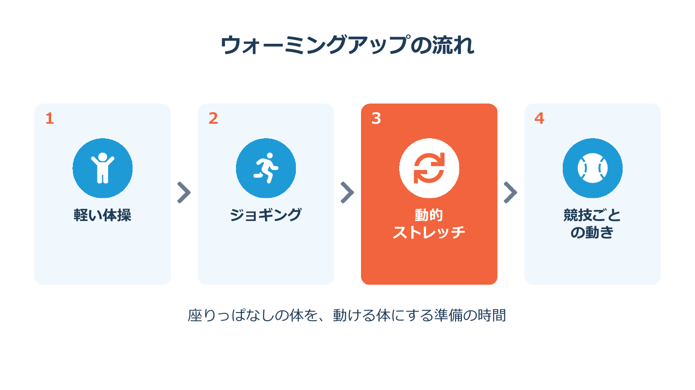
20
ウォーミングアップの流れ
目安 45秒開始 24:45
ウォーミングアップは、この順番で組み立てるとわかりやすいです。
軽い体操で体をほぐす。ジョギングで体を温める。動的ストレッチで関節を大きく動かす。そして最後に、競技ごとの動きにつなげる。
子どもたちは、学校で長い時間座って過ごしたあとに練習に来ます。座りっぱなしで固まった体を、動ける体にしてあげる。それがウォーミングアップの時間です。
④ 動き・ストレッチ21〜35分
スライド 21 / 48
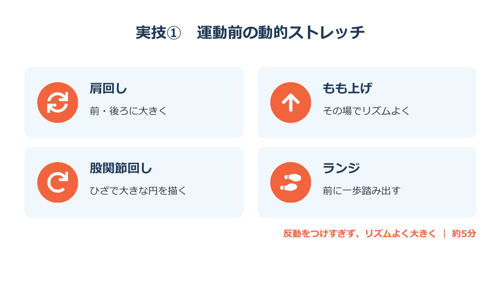
21
実技① 運動前の動的ストレッチ
目安 1分半開始 25:30
では、皆さん立ち上がってください。隣の方と手がぶつからないくらい、少し間をあけましょう。
痛みが出たら、そこで止めて大丈夫です。 改訂
まず私がやって見せますので、見ていてください。
進行講師が4つの動きを順に実演する。各種目は数回だけでよい
肩回し。前に、後ろに、大きく回します。ひじで大きな円を描くイメージです。
もも上げ。その場で、リズムよく。ひざをおへその高さまで上げます。
股関節回し。片足で立ち、ひざで大きな円を描きます。ふらつく方は壁や椅子に手をついてください。
ランジ。前に大きく一歩踏み出して、もとに戻ります。ポイントは、踏み出した足のひざがつま先より前に出すぎないことです。
どの動きも、反動をつけすぎず、リズムよく、大きく。これが大事です。
④ 動き・ストレッチ21〜35分
スライド 22 / 48

22
動的ストレッチの動画と全員実技
目安 3分開始 27:00
では、動画に合わせて、皆さんも一緒にやってみましょう。
進行動画を再生。講師は会場を回り、「いいですね」「もう少し大きく」と声をかける。反動を強くつけている方がいたら、「ゆっくりで大丈夫ですよ」と伝える
いかがでしたか。少し体が温まってきたのを感じますよね。これが「動ける体」の準備ができた状態です。
④ 動き・ストレッチ21〜35分
スライド 23 / 48
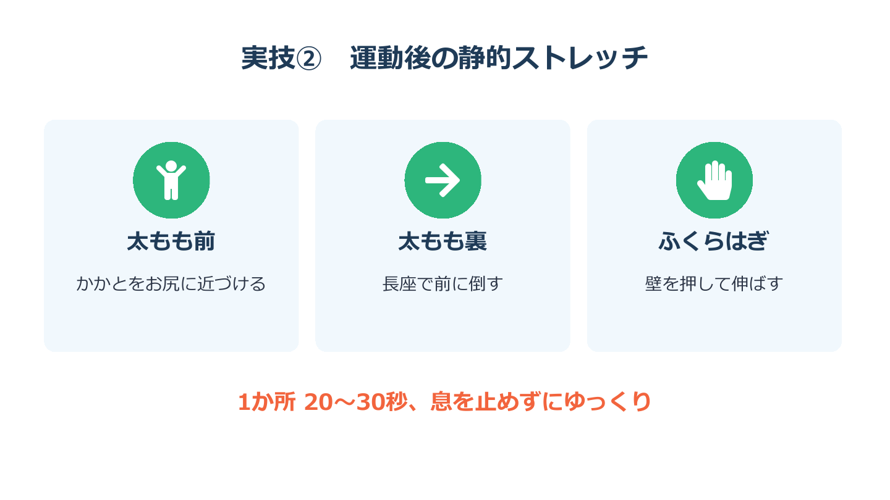
23
実技② 運動後の静的ストレッチ
目安 1分半開始 30:00
次は、練習が終わったあとのストレッチです。こちらも先にやって見せます。
太ももの前。かかとをお尻に近づけます。先ほどのチェックと同じ場所ですね。オスグッド病に関わる筋肉なので、成長期の子には特に大切な場所です。
太ももの裏。床に足を伸ばして座り、前に倒れます。
ふくらはぎ。壁を押すようにして、後ろの足のかかとを床につけたまま伸ばします。
それぞれ1か所につき20秒から30秒。息を止めずに、ゆっくり伸ばしてください。痛いところまで伸ばさず、「気持ちよく伸びている」ところで止めるのがコツです。
④ 動き・ストレッチ21〜35分
スライド 24 / 48

24
静的ストレッチの動画と全員実技
目安 3分開始 31:30
では、動画に合わせて一緒にどうぞ。床に座れない方は、立ったままできるものだけで構いません。
進行動画を再生。伸ばしている間に、「息を吐きながら」「あと少しです」と穏やかに声をかける
お疲れさまでした。どうぞお席にお戻りください。
④ 動き・ストレッチ21〜35分
スライド 25 / 48
最後に、現場の課題をひとつ。地域の少年野球チームで、クールダウンのストレッチがどれくらい行われているかを調べた報告では、わかっていることが現場で十分に生かされているのか、という疑問の声が上がっています。 改訂
だからこそ、明日の練習の最後に、太ももの前を伸ばす。全部でなくて構いません。それだけでも大きな一歩です。 改訂
ねらい「休むのはサボりではなく、練習の一部」という考え方を届けるパートです。体を動かした直後なので、少し落ち着いた声で始めます。
体を動かしたあとは、休む話です。
ここでのキーワードは、「休むことも、成長につながる練習の一部」です。

27
子どもに必要な睡眠時間の目安
目安 1分開始 35:30
まずは睡眠です。
厚生労働省の睡眠ガイドでは、小学生は9時間から12時間、中学生と高校生は8時間から10時間を目安に、睡眠時間を確保するようにと示されています。
小学生は、少なくとも9時間。私たち大人が思っているよりも、ずっと長い睡眠が必要なんです。
ここで少し考えてみてください。
夜8時まで練習した日。家に帰って、ご飯を食べて、お風呂に入って、宿題と明日の準備をして。子どもは何時に眠れるでしょうか。
進行会場に問いかけ、5秒ほど待つ。「10時」「11時」など声が出たら拾う
もし夜10時に寝て、朝6時半に起きたら、8時間半です。小学生の目安の9時間には届きません。
責めたいわけではありません。まずは今の状態を知ることが、第一歩だと思います。

29
よい睡眠のための生活習慣
目安 1分開始 38:00
では、よく眠るために何ができるでしょうか。
睡眠ガイドでは、朝は日光を浴びること、朝ご飯をしっかり食べること、日中は体を動かすこと、そして夜ふかしを習慣にしないことが挙げられています。
さらに、寝室にスマートフォンやタブレットを持ち込まず、部屋をできるだけ暗くして寝ることも、よい睡眠につながるとされています。
下の段の右の2つ、スマホと部屋の暗さは、特にご家庭の協力がいるところです。保護者の方にも、ぜひ伝えていただきたいポイントです。 改訂
次は、練習の休みについてです。
アメリカ小児科学会の報告では、その競技から週に1日から2日は離れること。そして年に2か月から3か月は、ひとつの競技から離れる期間をつくることが勧められています。
ひとつ気をつけたいのが、掛け持ちです。土日は野球、平日はサッカーと水泳。ひとつひとつは休みがあっても、全部合わせると休む日がない。そんな子がいないか、一度確かめてみてください。

31
練習時間の目安「年齢×1時間」
目安 1分開始 40:00
日本の資料も紹介します。
日本体育協会、今の日本スポーツ協会が2017年にまとめた研究では、1週間の活動時間が「年齢×1時間」より多いと、重いスポーツ障害の可能性が高かったとされています。
8歳なら週に8時間。10歳なら週に10時間。12歳なら週に12時間です。
皆さんの団の1週間の活動時間を、頭の中で足し算してみてください。
進行 改訂3秒ほど待つ（休息パートを8分に収めるため、元の5秒から短縮）
「ちょっと超えているかも」と感じた方もいらっしゃるかもしれません。これは絶対の決まりではありませんが、練習の予定を立てるときのひとつの物差しとして使ってみてください。

32
野球の少年団の場合：投球数の目安
目安 1分開始 41:00
野球の少年団の方に向けて、日本臨床スポーツ医学会の提言をご紹介します。
全力で投げる球の数は、小学生で1日50球、週に200球まで。中学生で1日70球、週に350球まで。そして、1日に2試合投げることは避けるようにとされています。
野球以外の団の方も、この考え方は同じです。同じ動きを何度も繰り返すと、どの競技でも体の一か所に負担がたまります。
進行 改訂会場に野球の団がいないときは、表の数字は読み上げず、最後の2文だけ話して30秒で次へ
休息の話の最後です。
眠ること。食べること、飲むこと。休むこと。この3つも、練習と同じくらい大切なものです。休養日は、空いたら休むのではなく、あらかじめ決めておくのがおすすめです。
そして、いちばんの落とし穴がこれです。夜の練習のあと、疲れ切って何も食べずに寝てしまう。
練習量が多いのに、回復や栄養が足りないと、疲れが抜けない状態やケガ、病気の危険があるとされています。練習が終わったあとこそ、しっかり食べて、しっかり眠る。これも立派な練習の一部です。
ねらい今日の研修の山場です。「見る力は育つ。でもその前に、まず見えているかを確かめる」という順番を伝えます。
さて、今日のはじめに「ボールがなかなか捕れない子」のお話をしました。その理由のひとつが、実は「見え方」にあるかもしれません。 改訂
ここからは、最後のテーマ、視る力のお話です。 改訂
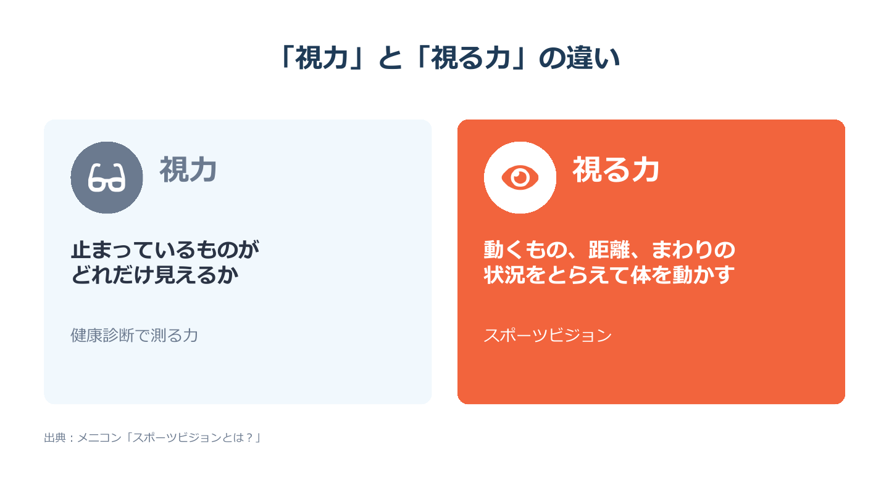
35
「視力」と「視る力」の違い
目安 1分開始 43:30
健康診断で測る視力は、止まっているものがどれだけ見えるかを調べるものです。
でも、スポーツの場面では、止まっているものを見るだけでは足りません。飛んでくるボールを目で追う。仲間や相手がどこにいるかを、一瞬でつかむ。そして、見たものに合わせて体を動かす。
こういった、動きの中で使う総合的な見る力を、スポーツビジョンと呼びます。視力がいいことと、スポーツでよく見えていることは、実は同じではないんです。

36
スポーツビジョンを形づくる力
目安 1分15秒開始 44:30
スポーツビジョンは、いくつかの力の組み合わせでできています。
まずは、止まっているものがちゃんと見えているか。これがすべての土台です。
その上に、視線を素早く動かす眼球運動。上から見下ろした図のように全体をとらえる空間認識。横に動くものをとらえる周辺視。距離の差を感じる、中心部と周辺部の感知力。一瞬でたくさんの情報をつかむ瞬間視。
そして最後に、見たものに素早く手で反応する、眼と手の協応です。見るだけで終わらず、体の動きにつなげる。ここがスポーツではいちばん大事になります。
皆さんの競技では、どの力をよく使っているでしょうか。（会場に問いかけ、競技名をひとつ挙げてもらうと盛り上がる）
準備 改訂スライド36の項目名を見直した場合（付録「スライド修正リスト」のスライド36の項目）は、この読み上げも同じ言葉に直してください。
うれしいことに、見る力は育てられる力です。
信州大学の研究では、こうした力は20歳ごろをピークに発達していくことが報告されています。小学生はまだ発達の途中で、一人ひとりの差が大きい時期です。
その差を生むのが、ふだんどれだけ体を動かしているか。運動の経験を通して、動くものを見る力などが育つと考えられています。
つまり、少年期の外遊びや、いろいろな運動の経験そのものが、見る力の土台になるということです。

38
まずは「きちんと見えているか」
目安 1分開始 46:45
ただし、見る力を育てる前に、まず大切なことがあります。それは、きちんと見えているかどうかです。
小中学生50人を調べたメニコンの調査では、多くの項目で、視力がよい子ほどスポーツビジョンの値も高い傾向が見られました。特に、向かってくるものを見る力と、距離の差を感じる力で、大きな差が出ています。
だから、ボールがなかなか捕れない子、反応が遅い子がいたら、まずは眼科で視力を確かめてもらう。これが、私たち指導者にできる最初の一歩です。
準備 改訂スライドの「特に瞬間視で大きな差」は、台本（出典の記事）と食い違っています。本番前にスライドを直してください（付録「スライド修正リスト」のスライド38の項目）。
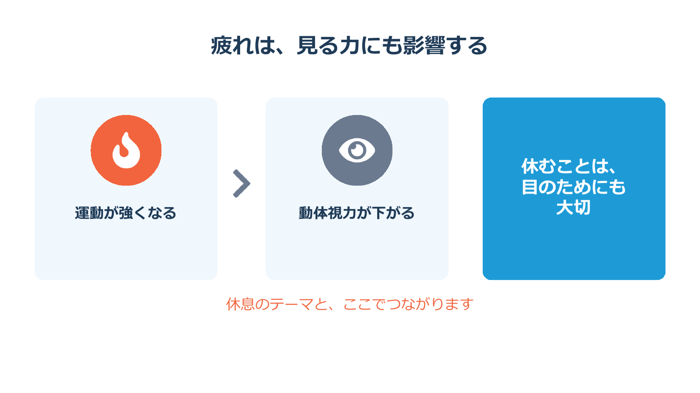
39
疲れは、見る力にも影響する
目安 45秒開始 47:45
もうひとつ、先ほどの休息の話とつながることがあります。
運動がきつくなるほど、動くものを見る力が下がったという報告があります。疲れているときは、体だけでなく、目の力も落ちているということです。
疲れた状態での練習は、ボールが見えにくい中での練習でもあります。休むことは、目のためにも大切なんです。

40
体験：目だけを素早く動かしてみよう
目安 2分開始 48:30
では、目の体験をしてみましょう。座ったままで大丈夫です。
進行講師が前で一緒にやりながら進める
両手を肩の高さでまっすぐ前に伸ばして、親指を立ててください。
顔は動かさずに、目だけで、左右の親指の爪を交互に素早く見ます。右、左、右、左。では30秒、ようい、始め。
進行30秒計る
はい、そこまで。次は、両手を大きく横に広げて、同じようにやってみましょう。ようい、始め。
進行30秒計る
はい、お疲れさまでした。幅を広げると、意外と難しかったのではないでしょうか。顔がつられて動いてしまった方もいらっしゃると思います。
これが、視線を素早く動かす力です。子どもたちとも、練習の合間に遊び感覚でやってみてください。
進行 改訂時間が押しているときは、2回とも時間を短くして1分半に収める

41
知っておきたいこと
目安 45秒開始 50:30
ここで、誤解のないようにお伝えしておきたいことがあります。
ビジョントレーニングは、視力を上げるためのものではありません。視力が下がっているときは、医療の領域です。気になるときは、まず眼科へ。
見えているかを確かめてから、見る力を育てる。この順番を大切にしてください。
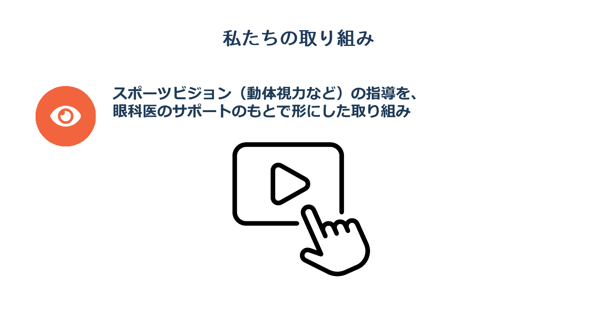
42
私たちの取り組み
目安 2分45秒開始 51:15
最後に、私たちの取り組みをご紹介します。
私たちの取り組みは、動体視力などスポーツビジョンの指導を、眼科医のサポートのもとで形にした取り組みです。
要記入（取り組みのいちばんの特徴をひとことで）
実際の様子を、動画でご覧ください。
進行 改訂動画を再生（動画は2分以内に収める）
要記入（動画のあとに、取り組みの中で子どもたちに起きた変化や、印象に残っている場面を、講師自身の言葉で2〜3文。ここは実体験がいちばん伝わる場所です）
⑦ まとめ・質疑応答・終わり54〜60分
スライド 43 / 48
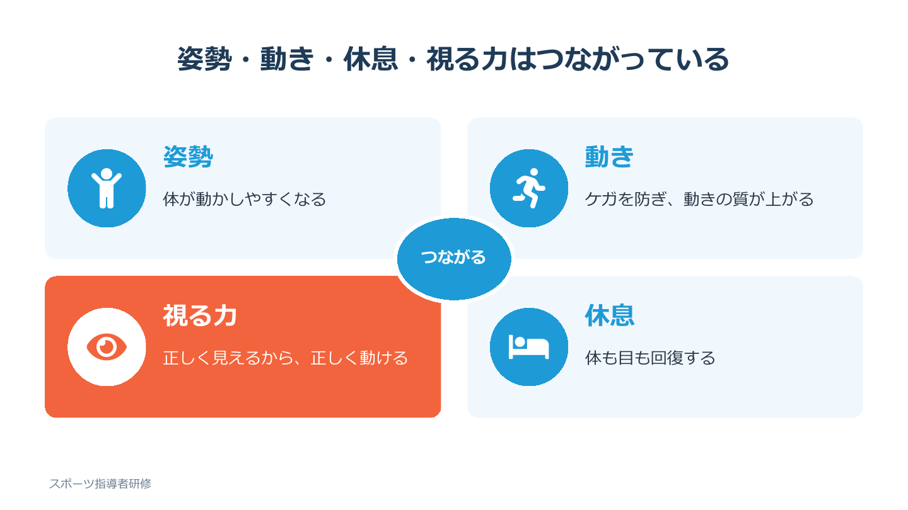
43
姿勢・動き・休息・視る力はつながっている
目安 1分開始 54:00
ねらい4つのテーマを一本につなげて、「明日からできること」で締めくくります。時間が押しているときは、スライド46の質問は2つに絞ってください。
最初に、「4つのテーマは最後に一本につながる」とお話ししました。
姿勢がよく、体がやわらかいと、体が動かしやすくなります。練習前にしっかり準備すると、ケガを防ぎ、動きの質が上がります。十分に休むと、体も目も回復します。そして、正しく見えるから、正しく動ける。
どれかひとつだけでは成り立ちません。一人の子どもの体の中で、全部つながっているんです。
⑦ まとめ・質疑応答・終わり54〜60分
スライド 44 / 48
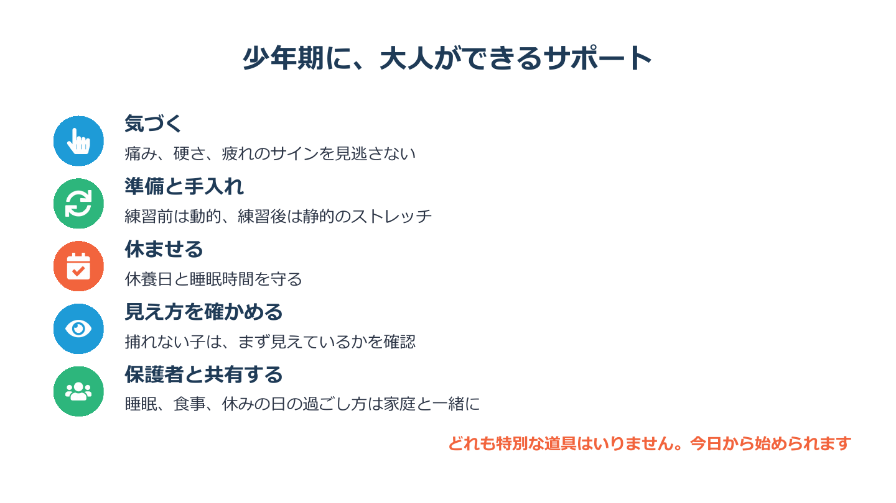
44
少年期に、大人ができるサポート
目安 1分半開始 55:00
では、明日から私たち大人に何ができるでしょうか。5つにまとめました。
気づくこと。痛み、硬さ、疲れのサインを見逃さない。
準備と手入れ。練習前は動的、練習後は静的のストレッチ。
休ませること。休養日と睡眠時間を守る。
見え方を確かめること。捕れない子は、まず見えているかを確かめる。
そして、保護者と共有すること。睡眠や食事、休みの日の過ごし方は、練習の場だけでは見えません。少年団は、保護者の方との距離が近いのが強みです。今日の話を、ぜひご家庭とも共有してください。
どれも特別な道具はいりません。今日から始められることばかりです。
⑦ まとめ・質疑応答・終わり54〜60分
スライド 45 / 48
進行少し間をとり、会場全体を見てからゆっくり話す
子どもの「できない」の裏には、練習量以外の理由が隠れていることがあります。
私たち大人が、少しだけ見方を変える。それだけで、子どもたちは中学、高校、その先まで、長くスポーツを楽しめるはずです。
今日の話が、皆さんの団の子どもたちの未来に少しでもつながれば、とてもうれしいです。
⑦ まとめ・質疑応答・終わり54〜60分
スライド 46 / 48

46
よくある質問（質疑応答）
目安 2分開始 57:00
それでは、残りの時間でご質問をお受けします。どんな小さなことでも構いません。
進行質問が出たらそちらを優先する。出ないときは、「よくいただく質問をご紹介します」と前置きして、下の答えを使う
Q 静的ストレッチは全部やめるべきですか。
A 全部やめる必要はありません。運動前に行うなら1回30秒未満にして、そのあとに動的ストレッチを入れてください。
Q 成長痛だから様子を見ていいですか。
A 痛みが続くときや、押すと痛がるときは、早めに医療機関で診てもらってください。
Q 休ませると下手になりませんか。
A 週に1日から2日の休みは、アメリカ小児科学会も勧めている考え方です。休むことも、成長の一部です。
Q 視る力のトレーニングで、視力は上がりますか。
A 目的が違います。視力は眼科の領域ですので、気になるときはまず眼科で確かめてください。
進行 改訂台本にない質問で答えに自信がないときは、「確かめてから団を通じてお返事します」と預かる。その場で推測で答えない
⑦ まとめ・質疑応答・終わり54〜60分
スライド 47 / 48
今日お話しした数字や事実は、こちらの資料をもとにしています。もっと詳しく知りたい方は、どうぞご覧ください。
⑦ まとめ・質疑応答・終わり54〜60分
スライド 48 / 48

48
ご清聴ありがとうございました
目安 30秒開始 59:30
本日は最後までご一緒いただき、ありがとうございました。
「練習前は動的、練習後は静的」。この合言葉だけでも、明日の練習で子どもたちに伝えていただけたらうれしいです。
要記入（所属と名前を添えて）ありがとうございました。
進行一礼
付録 本番前の確認ポイント
- スライド13、22、24、42の動画が、会場のパソコンでネットにつながらなくても再生できるか。音量もあわせて確かめてください。
- 動画の長さ。高校生インタビューは4分以内、ストレッチ動画は各3分以内、取り組みの紹介は2分以内が目安です。合計が約12分を超えるときは、休息パートのスライド31、32を短くして調整します。
- 実技の場所。壁際に全員が並べるか、床に座れるか。座れない会場なら、太もも前のチェックと太もも裏のストレッチは立ってできるやり方に切り替えます。
- スライド30と31の数字は、元の報告ではなく、それをまとめたスクールコンパスの記事から取っています。質問されたときはそのように答えてください。
- スライド14の引用する一言と、スライド42の講師ご自身の言葉（黄色の欄）を書き込んでおく。
- 付録「スライド修正リスト」の「必須」の項目が直っているか。
付録 スライド修正リスト
PowerPoint側で直してほしい箇所です。「必須」は本番前に必ず、「推奨」はできれば、「要判断」は講師のご判断でお願いします。
| 番号 | スライド | 区分 | 内容 |
|---|
| 1 | 1・42・47・48 | 必須 | 団体名・個人名・ロゴを載せない版にする場合、表紙の所属と氏名とロゴ、スライド42の見出しと出典、スライド47の参考資料の最後の1件、スライド48のロゴを外してください。この台本のスライド画像は、すでに外した状態にしてあります。 |
| 2 | 1 | 要判断 | タイトルは「姿勢・休息・動き・視る力」の順ですが、話す順番（スライド4・43）は「姿勢・動き・休息・視る力」です。主催者から決められた演題でなければ、話す順にそろえると聞き手が迷いません。 |
| 3 | 3・37・39 ほか | 要判断 | 「見る力」と「視る力」の表記が混ざっています。スポーツビジョンの意味で使うときは「視る力」に統一するか、使い分けるなら最初にひとこと説明を入れると親切です。 |
| 4 | 7 | 推奨 | 左下の「骨が軟骨から急に成長する時期」は、台本の「骨が急に成長する時期」とそろえると読みやすくなります。 |
| 5 | 13 | 必須 | 「ここに動画を挿入」のままです。高校生のインタビュー動画を入れてください。 |
| 6 | 22・24 | 必須 | 動画アイコンだけでタイトルがありません。動画を埋め込み、「実技① 動画に合わせて一緒に」などの見出しを入れると、会場が今何をしているか迷いません。 |
| 7 | 27・29 | 推奨 | 出典の表示がありません。「出典：厚生労働省『健康づくりのための睡眠ガイド2023』」を他のスライドと同じ位置に入れてください。 |
| 8 | 30 | 推奨 | 出典の表示がありません。台本付録のとおり、スクールコンパス掲載の要約（米国小児科学会）である旨を入れてください。 |
| 9 | 36 | 必須（確認） | 台本付録でも指摘されているとおり、「周辺視：横に動くものを見る」は以前の版ではDVA動体視力、「中心部・周辺部の感知力：距離の差を感じる」は深視力の説明でした。項目名と説明が合っていません。また、スライド38で話す「向かってくるものを見る力（KVA動体視力）」がこのスライドにありません。講師の団体で使っている定義と出典の記事に照らして、項目名をそろえてください。 |
| 10 | 37 | 推奨 | 「20歳ごろ」に下線が付いており、リンクのように見えます。下線を外してください。 |
| 11 | 38 | 必須 | 「特に瞬間視で大きな差」は、出典のメニコンの記事では「とくにKVA動体視力や深視力で大きな差」です（台本付録の確認結果による）。例として「特に、向かってくるものを見る力と距離感で大きな差」に直してください。あわせて、下の「スポーツ指導者研修」を「出典：メニコン『スポーツビジョンとは？』」に差し替えてください。 |
| 12 | 39 | 推奨 | 出典の表示がありません。「出典：明治国際医療大学誌 11号（2014）」を入れてください。 |
| 13 | 42 | 必須 | 動画アイコンのままです。紹介動画を埋め込んでください。 |
| 14 | 47 | 推奨 | スライド上で出典として示している「フットボールチャンネル」（36）、「スクールコンパス」（31・33）、「日本高野連資料」（32）が参考資料の一覧にありません。追加してください。また「青少年の野球障害に対する提言」の「言」だけが次の行に落ちているので、改行位置を直してください。 |
| 15 | 全体 | 推奨 | 灰色の小さな文字（スライド6の「どんどん伸びる」「追いつかない」、各スライドの補足文など）は、体育館や公民館のプロジェクターでは読みにくくなりがちです。本番会場で一度投影して、後ろの席から読めるか確かめてください。 |
付録 参考資料
- 厚生労働省「健康づくりのための睡眠ガイド2023」（学研 体育・保健体育ジャーナル掲載）
https://gakkokyoiku.gakken.co.jp/wp-content/uploads/2024/06/taiiku_journal_24.pdf
- 浜松市「睡眠」
https://www.city.hamamatsu.shizuoka.jp/kenkozoshin/health/health_21/heart/sleep.html
- さいたま市立病院「小児・青少年のスポーツ」
https://www.city.saitama.lg.jp/hospital/department/001/p097684.html
- メディカルノート「オスグッド・シュラッター病」
https://medicalnote.jp/
- 横浜市スポーツ医科学センター「成長期のスポーツ障害」
https://www.hamaspo.com/files/2016/11/syoko_vol58_p08-09.pdf
- BASEBALL KING「成長期の一過性の痛み『オスグッド』ってなんだ!?」
https://baseballking.jp/ns/182035/
- NSCAジャパン「ウォームアップとクールダウン」
https://docs.nsca-japan.or.jp/park/20_3_12-13_149_12538.pdf
- 青森県スポーツ科学センター コラム（令和5年5月）
https://www.aiss.pref.aomori.jp/
- 福岡市早良区「ケガ予防のためのストレッチ」
https://www.city.fukuoka.lg.jp/sawaraku/t-shien/life/sports/documents/stretch.pdf
- 日本臨床スポーツ医学会「青少年の野球障害に対する提言」（日本高野連資料）
https://www.jhbf.or.jp/topics/info/data/20190703_2.pdf
- スクールコンパス「ケガをしない体」
https://eleschool-compass.com/naraigoto/karada/kega-shinai.php
- スクールコンパス「いろいろやるか、1つに絞るか」
https://eleschool-compass.com/naraigoto/karada/hitotsu-ka-iroiro.php
- メニコン「スポーツビジョンとは？」
https://www.menicon.co.jp/whats/column/detail42.html
- フットボールチャンネル「スポーツビジョン」
https://www.footballchannel.jp/?p=12400
- 信州大学 スポーツビジョンの発達に関する研究
https://www.shinshu-u.ac.jp/faculty/textiles/db/seeds/descente22_19_ishigaki.pdf
- 明治国際医療大学誌 運動負荷とスポーツビジョン
https://meiji-u.repo.nii.ac.jp/record/241/files/01_yamamoto.pdf
- ファンケル「かんたん眼トレ」
https://www.fancl.co.jp/clip/healthcare/3mintraining/2402-2/index.html
- BEYOND「視力と視覚について」
https://beyond-afa.com/